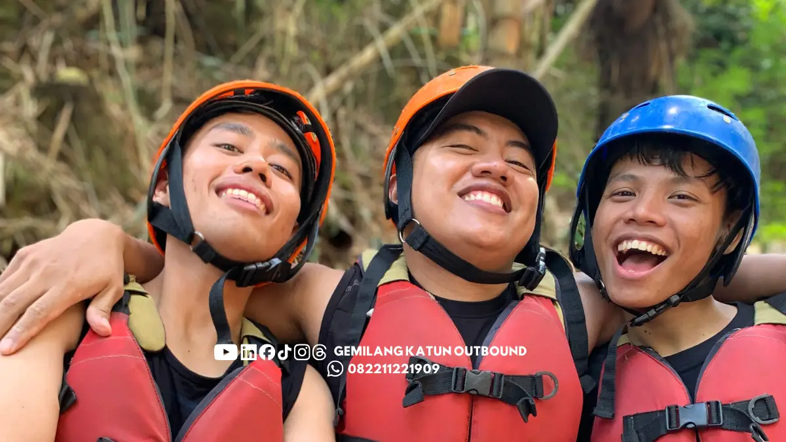

Daftar Isi
- Berapa Lama Durasi Rafting?
- Apa Itu Rafting dan Apakah Sama dengan Arung Jeram?
- Mengapa Rafting Malang Layak Dicoba?
- Berapa Biaya Rafting di Malang?
- Apa yang Membuat Harga Rafting Malang Berbeda?
- Bagaimana Mendapat Rafting Malang Murah?
- Di Mana Tempat Rafting di Malang?
- Kapan Waktu Terbaik Rafting di Malang?
- Rafting Mulai Usia Berapa?
- Apakah Harus Bisa Berenang untuk Ikut Rafting?
- Apa Saja Perlengkapan Rafting yang Wajib Ada?
- Sepatu Rafting Seperti Apa yang Cocok?
- Rafting Sebaiknya Pakai Baju Apa?
- Bagaimana Perlengkapan Rafting untuk Wanita Berhijab?
- Apa Tips Rafting untuk Pemula?
- Apakah Rafting di Malang Aman?
- Bisakah Rafting Digabung dengan Outbound atau Gathering?
Rafting Malang adalah kegiatan mengarungi sungai berarus menggunakan perahu karet bersama pemandu profesional. Biaya dihitung per peserta dengan jadwal yang sangat bergantung pada fluktuasi debit air sungai.
Aktivitas arung jeram ini menyajikan tantangan alam terbuka yang memacu adrenalin sekaligus memperkuat kerja sama tim. Sebelum berangkat ke sungai, peserta wajib memahami regulasi usia, biaya, perlengkapan, dan keselamatan.
- Sesi rafting berlangsung sekitar 1,5 hingga 2 jam, sedangkan seluruh rangkaian kegiatan rata-rata 3 hingga 5 jam (Gemilang Katun Outbound, 2026).
- Jika digabung dengan outbound, total durasi acara bertambah sekitar 3 hingga 4 jam (Gemilang Katun Outbound, 2026).
- Peserta tidak wajib bisa berenang karena jaket pelampung dan pemandu disediakan.
- Biaya rafting dihitung per peserta dan berbeda antarpenyedia, sehingga komponen yang termasuk harus diperiksa.
- Debit air akibat musim menentukan apakah rafting dapat berjalan pada hari tertentu.
Dengan perencanaan matang dan pemilihan operator resmi yang teruji, kegiatan rafting akan berlangsung aman, menyenangkan, serta memberikan pengalaman berkesan bagi seluruh rombongan.
Berapa Lama Durasi Rafting?
Sesi rafting sendiri berlangsung sekitar 1,5 hingga 2 jam di atas aliran air sungai. Sedangkan seluruh rangkaian kegiatan termasuk registrasi, briefing, dan bersih-bersih rata-rata memakan waktu 3 hingga 5 jam.
Jangka waktu tersebut meliputi perjalanan ke lokasi start, pemakaian peralatan keselamatan, simulasi mendayung, hingga istirahat di basecamp. Untuk kunjungan yang santai, sisakan waktu minimal setengah hari agar acara tidak terburu-buru.
Apa Itu Rafting dan Apakah Sama dengan Arung Jeram?
Rafting adalah aktivitas mengarungi sungai berarus menggunakan perahu karet secara berkelompok. Istilah arung jeram sendiri merupakan padanan kata dalam bahasa Indonesia yang memiliki makna dan tujuan aktivitas yang sama.
Dalam satu perahu karet, peserta mendayung bersama mengikuti aba-aba pemandu yang disebut skipper. Dayungan hanya efektif bila seluruh anggota bergerak searah dan seirama, sehingga rafting sangat bergantung pada komunikasi tim.
Olahraga arung jeram merupakan kegiatan fisik yang menuntut kebugaran sedang hingga tinggi. Karena itu, setiap peserta perlu memahami batasan kondisi tubuh masing-masing sebelum memutuskan untuk turun ke jeram sungai.
| Aspek | Fakta |
|---|---|
| Definisi | Mengarungi sungai berarus dengan perahu karet secara berkelompok |
| Istilah lain | Arung jeram |
| Durasi sesi di sungai | Kurang lebih 1,5 hingga 2 jam |
| Durasi seluruh kegiatan | Rata-rata 3 hingga 5 jam |
| Penghitungan biaya | Per peserta, berbeda antarpenyedia |
| Wajib bisa berenang | Tidak, pelampung dan pemandu disediakan |
| Faktor penentu jadwal | Debit air dan cuaca |
Mengapa Rafting Malang Layak Dicoba?
Rafting Malang layak dicoba karena memadukan tantangan fisik, keindahan alam terbuka, dan kekompakan tim dalam satu perahu. Keasrian sungai di kawasan Malang Raya memberikan kesegaran tersendiri bagi setiap pengunjung.
Derasnya arus sungai memaksa peserta untuk fokus penuh pada saat itu juga dan sejenak melepaskan diri dari rutinitas kerja harian. Sisi psikologisnya dibahas terpisah dalam ulasan mendalam mengenai dinamika mental saat mengarungi arus jeram liar.
Bagi kelompok kerja maupun rombongan komunitas, melewati jeram bersama sering menjadi bahan cerita yang membangun kedekatan. Rasa saling percaya antaranggota tim akan tumbuh secara alami saat menaklukkan rintangan sungai.
Berapa Biaya Rafting di Malang?
Biaya rafting di Malang umumnya dihitung per peserta dan bervariasi menurut penyedia jasa, rute jeram, serta fasilitas pelengkap. Oleh karena itu, kepastian tarif wajib dikonfirmasi langsung sebelum melakukan pembayaran atau pemesanan paket.
Tarif resmi setiap operator dapat berubah sewaktu-waktu mengikuti musim atau penyesuaian fasilitas di lapangan. Rincian tarif sengaja tidak dicantumkan dalam angka rupiah statis agar Anda selalu mendapatkan informasi paling akurat dari penyedia.
Cara paling aman adalah meminta penawaran tertulis resmi dari penyedia jasa pilihan Anda. Gunakan tabel panduan komponen berikut saat mengajukan pertanyaan penawaran paket rafting.
| Komponen | Yang Perlu Ditanyakan |
|---|---|
| Transportasi | Apakah sudah termasuk antar-jemput ke titik start? |
| Perlengkapan | Apakah biaya sewa helm, pelampung, dan dayung telah tercakup dalam paket? |
| Asuransi | Apakah peserta mendapat perlindungan asuransi? |
| Fasilitas | Apakah tersedia ruang ganti, area bilas, dan konsumsi? |
| Dokumentasi | Apakah foto atau video dikenakan biaya tambahan? |
Apa yang Membuat Harga Rafting Malang Berbeda?
Harga rafting Malang berbeda karena variasi panjang rute sungai, lokasi titik start, jumlah rombongan, serta ragam fasilitas pendukung. Tingkat kesulitan jeram dan fasilitas basecamp juga turut membedakan harga penawaran masing-masing operator.
Harga rafting tidak sama di setiap sungai karena tiap lokasi memiliki rute, tingkat kesulitan jeram, fasilitas, dan biaya operasional yang berbeda. Sungai dengan grade jeram lebih tinggi tentu membutuhkan tim pengaman yang lebih banyak.
Bandingkan penawaran dengan syarat yang setara, yaitu durasi sesi, jumlah pemandu, dan perlengkapan yang termasuk, bukan hanya angka akhirnya. Periksa seluruh fasilitas agar tidak ada komponen esensial yang terlewatkan.
Bagaimana Mendapat Rafting Malang Murah?
Rafting Malang murah bisa didapat dengan memesan jauh hari, memilih hari di luar liburan puncak, atau membawa rombongan, tanpa memangkas standar keselamatan. Strategi ini sangat efektif menghemat anggaran acara Anda.
Penyedia umumnya lebih fleksibel bernegosiasi untuk pemesanan awal dan jumlah peserta besar. Diskon rombongan biasanya diberikan karena operator dapat mengoptimalkan pemakaian pemandu dan kendaraan pengangkut secara efisien.
Hindari memilih hanya berdasarkan harga termurah, karena harga rendah kadang berarti kualitas peralatan atau jumlah pemandu dikurangi. Utamakan selalu jaminan keselamatan di atas penawaran harga yang murah tanpa kejelasan.
Di Mana Tempat Rafting di Malang?
Tempat rafting di Malang berada di aliran sungai wilayah Malang Raya, termasuk kawasan Batu, dengan titik start yang berbeda-beda tergantung penyedia jasa yang dipilih. Setiap aliran sungai menawarkan panorama tebing dan jeram alami yang khas.
Sebelum memesan, tanyakan lokasi titik start, jarak dari tempat menginap, dan apakah transportasi ke titik tersebut sudah disediakan. Hal ini sangat penting untuk mengatur jadwal penjemputan rombongan dengan lancar.
Lokasi titik awal kadang-kadang terletak pada jarak yang cukup jauh dari tempat kegiatan lainnya, sehingga durasi perjalanan harus diperhitungkan dengan cermat agar agenda kegiatan Anda tidak berantakan.
Kapan Waktu Terbaik Rafting di Malang?
Waktu terbaik rafting ditentukan oleh debit air: musim hujan membuat arus lebih menantang dan bisa dihentikan sementara, sedangkan musim kemarau dapat membuat sesi kurang optimal. Periode peralihan musim biasanya menyajikan kondisi sungai paling ideal.
Aliran air sungai di Malang mengalami perubahan sesuai dengan intensitas curah hujan yang terjadi. Konfirmasikan status operasional kepada penyedia beberapa hari sebelum hari pelaksanaan, dan siapkan rencana cadangan bila sesi dibatalkan karena cuaca.
Pertimbangan musim untuk acara kelompok kantor atau komunitas dibahas lebih rinci dalam panduan paket gabungan outbound dan rafting Malang agar seluruh aktivitas tersusun terstruktur.
Rafting Mulai Usia Berapa?
Penyedia rafting umumnya menerapkan batas usia minimum dan maksimum, tetapi angka pastinya berbeda antarpenyedia sehingga peserta perlu menanyakan aturan usia sebelum memesan. Batasan ini umumnya berada di kisaran 7 hingga 65 tahun.
Kelompok usia anak-anak yang belum mencapai batas minimum dan populasi lansia pada umumnya dilarang berpartisipasi untuk menjamin keselamatan mereka. Faktor kekuatan fisik dan refleks menjadi pertimbangan utama di medan sungai.
Individu yang memiliki riwayat medis berupa penyakit jantung atau hipertensi yang belum terkendali dengan baik disarankan untuk tidak memaksa diri mengikuti kegiatan di sungai demi menghindari risiko kesehatan fatal.
Apakah Harus Bisa Berenang untuk Ikut Rafting?
Tidak, peserta tidak wajib bisa berenang karena seluruh peserta dilengkapi jaket pelampung berstandar keselamatan dan didampingi pemandu selama kegiatan rafting berlangsung. Daya apung pelampung dirancang menahan berat tubuh di atas permukaan air.
Pelampung tetap wajib dipakai walaupun peserta mahir berenang, sebab arus sungai bisa berubah tanpa terduga. Perlengkapan ini memastikan kepala tetap berada di atas air jika peserta terlempar dari perahu.
Rasa cemas pemula umumnya turun setelah mengikuti briefing keselamatan dan merasakan stabilitas perahu di air. Instruktur akan mendampingi dan memberikan instruksi penyelamatan secara jelas di setiap jeram.
Apa Saja Perlengkapan Rafting yang Wajib Ada?
Perlengkapan rafting yang wajib ada meliputi helm, jaket pelampung, sepatu atau sandal gunung, dayung, serta tim rescue dan perlengkapan P3K dari penyedia. Semua perlengkapan ini wajib diperiksa kelayakannya sebelum dipakai.

Kelengkapan peralatan keselamatan merupakan perlindungan garis depan bagi setiap peserta arung jeram. Pastikan ukuran helm dan pelampung terpasang pas di tubuh serta terkunci rapat dengan sempurna.
| Perlengkapan | Fungsi Utama |
|---|---|
| Helm | Melindungi kepala dari benturan batu atau dayung |
| Jaket pelampung | Menjaga tubuh tetap mengapung di permukaan air |
| Sepatu atau sandal gunung | Melindungi telapak kaki dari batu tajam di tepi dan dasar sungai |
| Dayung | Alat gerak perahu, dipegang sesuai arahan skipper |
| Tim rescue dan P3K | Pertolongan bila terjadi keadaan darurat di titik rawan |
Sepatu Rafting Seperti Apa yang Cocok?
Sepatu rafting yang cocok adalah sepatu atau sandal gunung yang menempel kuat di kaki, karena berfungsi melindungi telapak dari batu tajam di tepi sungai. Alas kaki bertali pengencang menjaga posisi kaki tetap stabil saat melangkah.
Hindari sandal jepit yang mudah terlepas saat berjalan di pinggir sungai atau ketika terjatuh ke air. Sandal yang hanyut dapat mempersulit evakuasi dan berisiko melukai telapak kaki saat menginjak bebatuan sungai.
Rafting Sebaiknya Pakai Baju Apa?
Rafting sebaiknya memakai pakaian ringan berbahan cepat kering seperti dry-fit, sedangkan jeans dan katun tebal sebaiknya dihindari karena menjadi berat saat basah. Bahan dry-fit menjaga tubuh tetap hangat dan leluasa bergerak.
Celana pendek atau legging olahraga ringan umumnya nyaman untuk mendayung di atas perahu karet. Pakaian yang fleksibel mempermudah gerakan tubuh saat bermanuver melewati jeram yang bergelombang tinggi.
Bawa satu set pakaian ganti kering untuk dipakai setelah sesi selesai, lengkap dengan perlengkapan mandi pribadi. Simpan pakaian bersih di tas terpisah agar tetap kering saat Anda kembali ke basecamp.
Bagaimana Perlengkapan Rafting untuk Wanita Berhijab?
Peserta wanita, termasuk yang berhijab, dapat ikut rafting dengan pakaian menutup aurat berbahan cepat kering dan penutup kepala yang terpasang kuat di bawah helm. Kenakan kerudung instan atau jilbab olahraga spandek tanpa peniti tajam.
Pilih ukuran pakaian yang pas agar tidak menghambat gerak mendayung dan tidak mudah tersangkut dahan pohon di pinggir sungai. Legging renang dipadu atasan dry-fit panjang menjadi pilihan paling aman dan nyaman.
Apa Tips Rafting untuk Pemula?
Tips rafting untuk pemula yang utama adalah menyimak briefing pemandu, mengikuti arahan posisi duduk dan cara memegang dayung, serta tidak memaksakan diri saat kurang sehat. Fokus dan ketenangan adalah kunci menikmati petualangan air ini.
- Simak briefing dengan sungguh-sungguh, terutama prosedur bila perahu terbalik di jeram.
- Duduk pada posisi yang diarahkan pemandu dengan menjepitkan kaki di sela tabung perahu.
- Pegang gagang dayung sesuai arahan skipper agar tangan tidak terkilir saat terkena gelombang.
- Makan ringan sekitar 2 jam sebelum mulai, jangan dalam keadaan perut kosong atau terlalu kenyang.
- Bawa pakaian ganti bersih, kantong tahan air (dry bag), dan air minum secukupnya.
Persiapan fisik sebelum mengikuti rafting juga penting, terutama bagi pemula yang belum terbiasa dengan aktivitas olahraga air dengan intensitas sedang hingga tinggi.
Apakah Rafting di Malang Aman?
Rafting relatif aman jika dilakukan bersama penyedia yang memenuhi standar keselamatan, tetapi tetap berisiko sehingga peserta wajib mengikuti briefing dan memilih operator yang terverifikasi. Pengalaman operator menjamin penanganan risiko yang tepat.
Sebelum memesan paket arung jeram, periksa lima hal penting berikut ini secara teliti:
- Izin operasional resmi penyedia jasa wisata arung jeram.
- Kualifikasi pemandu, termasuk pengalaman membaca arus dan pelatihan penyelamatan air (water rescue).
- Kondisi perahu karet, helm pelindung, dan jaket pelampung yang layak pakai.
- Rasio idealnya satu pemandu berpengalaman untuk setiap perahu yang beroperasi.
- Kesiapan tim rescue dan rencana evakuasi bila cuaca ekstrem atau debit air naik secara mendadak.
Informasi ini bersifat umum dan bukan pengganti saran medis. Peserta dengan kondisi kesehatan tertentu sebaiknya berkonsultasi dengan dokter sebelum memutuskan untuk ikut kegiatan rafting.
Bisakah Rafting Digabung dengan Outbound atau Gathering?
Di Gemilang Katun Outbound, rafting bisa digabung dengan outbound atau gathering jika acara berlangsung minimal satu hari penuh dan mayoritas peserta memiliki kondisi fisik yang mendukung aktivitas air.
Format setengah hari sekitar 4 jam kurang cocok karena waktu untuk permainan darat menjadi sangat terbatas. Kombinasi full day memberikan porsi waktu yang seimbang antara team building darat dan petualangan air.
Rafting Malang paling nyaman dinikmati bila peserta memahami durasi, biaya per peserta, aturan usia, perlengkapan, dan standar keselamatan sebelum berangkat ke lokasi pengarungan.
- Alokasikan 3 hingga 5 jam untuk seluruh rangkaian kegiatan.
- Minta rincian komponen harga secara tertulis kepada pihak vendor.
- Pilih penyedia yang jelas legalitas dan standar keselamatannya.
- Konfirmasi kondisi sungai beberapa hari sebelum berangkat.
Butuh bantuan menyusun kegiatan rafting atau outbound di Malang? Segera hubungi fasilitator Gemilang Katun Outbound melalui WhatsApp untuk konsultasi paket dan jadwal terbaik rombongan Anda.
Konsultasikan Kebutuhan Rafting & Outbound Malang Anda Sekarang!
Booking & Tanya Paket via WhatsApp 0822-1122-1909